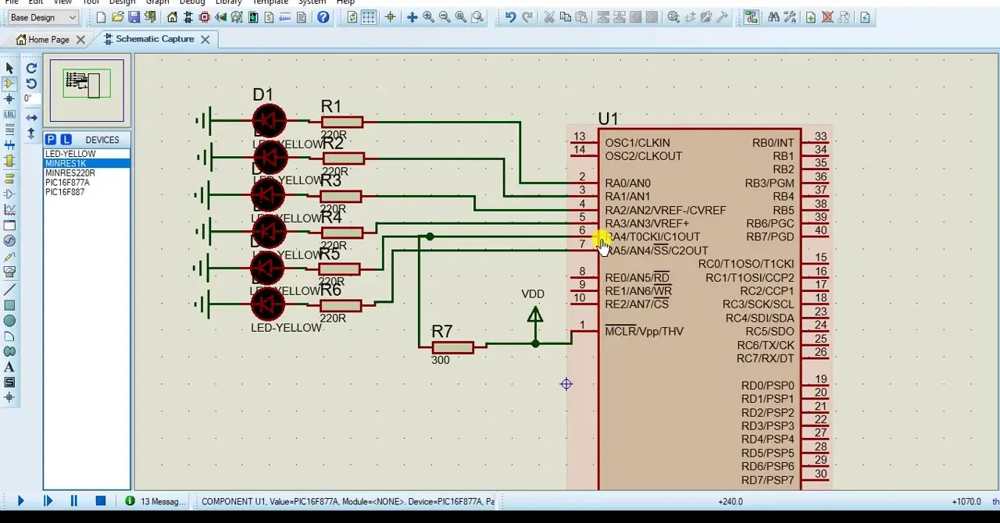

Todo digital, el puerto A como salida y se invierte cada 400 ms.
ADCON1 = 0b0111; // todo digital
TRISA = 0;
PORTA = 0;
while (1) {
PORTA = ~PORTA;
Delay_ms(400);
}RA4 también es la entrada de reloj externo del Timer0 (T0CKI) y en estos micros su salida es de drenador abierto. Si se hace parpadear todo el puerto A, todos los LEDs prenden menos el de RA4. Con una resistencia de 1 k a 10 k de RA4 a VDD (pull up) la señal ya sale y el LED funciona.

Todo digital, el puerto A como salida y se invierte cada 400 ms.
ADCON1 = 0b0111; // todo digital
TRISA = 0;
PORTA = 0;
while (1) {
PORTA = ~PORTA;
Delay_ms(400);
}Al correr el programa todos los LEDs del puerto A parpadean menos el de RA4, porque ese pin solo puede llevar la salida a 0.
Se pone una resistencia de 1 k a 10 k de RA4 a positivo. En Proteus se usa una de 300 Ω para que la simulación se vea bien. Después se conecta la carga.
Este detalle no aparece en los micros nuevos, pero si un proyecto con un PIC16F antiguo no prende algo en RA4, es lo primero que hay que revisar.